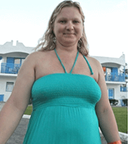
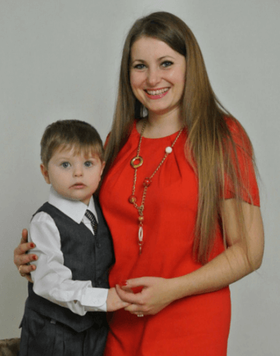

себя?

Годами хочешь
наладить питание
И заняться спортом, но
не находишь в себе сил
и мотивации;
мечтаешь изменить себя
Сделать свою жизнь ярче,
наполнить ее удивительными
эмоциями;
Чувствуешь апатию
и отсутствие энергии
Хочешь стать более собранным
и целеустремленным;
С сожалением смотришь
на более успешных
И организованных людей и не
знаешь, как стать таким же;
Мечтаешь расстаться
с вредными привычками
Но все попытки отказаться
от них приводят к срыву;
хочешь перемен
— Но почему-то остаешься
на месте, погрязая в рутине.
Многие
ГОДы ...
Ты мечтаешь о том, чтобы изменить свою
жизнь. А в реальности предпочитаешь
здоровому питанию домашние посиделки
с жирной едой, а занятиям спортом
— выходные перед телевизором…
Но есть и другие.
Те, кто смог
наладить питание
и изменить
мировосприятие.
Это — выпускники
программы PINTOSEVICH
BODY DESIGN.
Программа
PINTOSEVICH BODY DESIGN
— Это комплексный и научно обоснованный
подход к изменению тела и мышления.
Цель программы — не помочь “быстро сбросить
5 кг к Новому Году”, но изменить твои установки,
привычки, ценности. Это полная перезагрузка
мировоззрения, вслед за которой (как очень
приятный бонус ;), ты получишь заветный
минус в объемах.
На программе
курса
мы проработаем 6
составляющих:
Питание
Авторская методика Михаила
Пинтосевича, благодаря
которой стали стройными
и здоровыми более N человек
Мотивация
Еженедельные аудио-уроки
от Ицхака Пинтосевича — заряд
бодрости и мотивации, который
поможет свернуть горы
Движение
10-минутные видео-тренировки
от Вячеслава Смирнова
— опытного врача-терапевта
и преподавателя йоги
Аутотренинг
Компьютерная программа
“Intellect Designer” будет
ежедневно программировать
твои мысли в правильном
направлении
Мышление
Секреты гармоничного
мышленияот всех тренеров
проекта. Узнай, как достигать
поставленных целей и ежедневно
получать удовольствие от жизни
Окружение
Участие в закрытой
группе в Facеbook, где тебя
будут поддерживать
профессиональные коучи
и другие участники программы
Благодаря
программе
PINTOSEVICH BODY
DESIGN ты:
наконец
сбросишь
лишний вес
С которым не мог
расстаться;
получишь
силы
И мотивацию
заниматься
спортом;
без труда
внедришь новые
Здоровые привычки,
которые помогут
тебе оставаться
молодым и здоровым;
научишься
раньше ложиться
И вставать, будешь
спать как младенец,
избавишься от отеков
и синяков под глазами;
избавишься
от хронической
усталости
Почувствуешь силы
развиваться
и творить;
забудешь
о вздутии
живота
И других проблемах
с желудком;
научишься
программировать
свое подсознание
И с легкостью
оставаться здоровым
и успешным;
проработаешь
свои комплексы
и страхи
Станешь сильнее
и уверенней в себе;
сможешь начать \
сделать то, о чем
давно мечтал
Но по каким-то
причинам
не решался;
обретешь
единомышленников
Заручишься
поддержкой людей,
которые также
стремятся к развитию.
Тренеры
программы
Ицхак
Пинтосевич 1

Автор методики, эксперт в системном
развитии бизнеса, личности и общества
Наиболее популярный тренер
личностного роста и мотивации
в русскоязычном мире. Основатель
"Академии Экспертов Влияй!”.
Разработал систему гармоничного
развития человека "5 сфер"
и одноименный портал 5sfer.com,
который за прошлый год посетили
более 2 млн человек. Автор
бестселлеров: «Действуй! 10 Заповедей Успеха», «Ставь Цели!» и еще десяти книг-тренингов. В живых и онлайн-программах Ицхака приняло участие более 70 000 человек. Среди клиентов Isaac Pintosevich Systems — Procter&Gamble, MasterCard, Deloitte, AVON и
другие транснациональные
корпорации.
Михаил
Пинтосевич 2
Эксперт в теме питания
и здоровья
Ученый-исследователь, соавтор
бестселлера «Живи! 7 заповедей энергии и здоровья». Автор нескольких десятков тренингов по улучшению и укреплению здоровья. Тренер по психофизической подготовке пятикратной чемпионки
мира по шашкам.
Вячеслав
Смирнов 4

Эксперт в области систем развития
и оздоровления человека
Врач-терапевт, военный врач, врач
народной и нетрадиционной медицины. Основатель Центра йоги и систем
оздоровления в Киеве. Чемпион мира
по йога-спорту. Автор бестселлера «Живи Энергично».
Юлия
Боровик 3

Главный коуч и тренер Isaac
Pintosevich Systems
Эксперт в гармоничном развитии
личности. Автор серии статей
“Жизнь в стиле коучинг”. Директор
Международной Профессиональной Организации Коучей и Тренеров (IPACT).
Светлана
Свечкарь 5

Сертифицированный коуч и тренер
IPS, IPACT, НЛП-практик.
Практикующий врач-эндокринолог,
член Украинской ассоциации
диабетологов и эндокринологов,
эксперт на телеканале СТБ,
Новий Канал, ICTV.

Все материалы,
уроки, домашние
задания ...
Инструкции и видео по программе ты найдешь
именно в GETCOURSE. Также у тебя будет
доступ в закрытую группу в Facebook,
где ты сможешь пообщаться с коучами
и другими участниками, получить
поддержку и задать любой вопрос.
Обучающая
платформа
Обучение проходит на специальной
обучающей онлайн-площадке
GETCOURSE. После оплаты
ты получишь письмо
для регистрации на этой
площадке.
Программа построена
таким образом, что доступ
к материалам следующей
недели невозможен без работы
над собой. В конце каждой
недели участники должны
написать отчет и рассказать
о своих успехах
и самочувствии
Доступ к материалам следующей
недели будет открыт после
проверки отчета.
Ваша
неделя с
PINTOSEVICH
BODY
DESIGN
Итоги
и результаты
прошлой недели
Вебинар врача
-эндокринолога
Светланы Свечкарь
Вебинар эксперта
в теме питания
Михаила
Пинтосевича
Видео-урок
по мотивации
Ицхака Пинтосевича
Упражнения
по мотивации
Задания
и материалы
по питанию
от Светланы
Свечкарь
Вебинар-бонус
на тему мотивации
Задания
и дополнительные
материалы
Что
говорят
Победители

После
До
 Светлана
Александрова
39 лет
Всем добрый день! Меня зовут Светлана. Мне 39 лет. Я живу в России, в г. Екатеринбург. Предлагаю вашему вниманию историю моей ПоБеДы.
Конечно же, это была победа над собой, над своими привычками и убеждениями, над своей ленью и комплексами!!!
По жизни я была стройняшкой, занималась спортом – плаваньем, фитнесом. Насчет диет никогда не думала, ела всё подряд, но при этом сохраняла свою форму. Про меня говорили: «Не в коня корм».
Всё началось с того, что я вышла замуж и у меня родились дети – в 2008 году родилась дочь, в 2012 году родился сын. Практически 2 декрета подряд. И всё это время я уделяла время детям, мужу, семье, отложив заботу о себе «на потом». Вес мой продолжал расти, и я стала избегать фотографироваться и смотреть на себя в зеркало… Муж мне несколько раз говорил, что пора худеть, я принималась то за один способ уменьшить вес, то за другой. Они не имели системности и приносили незначительные кратковременные результаты.
До Победы (2014)
К моему счастью, в конце 2014 года я узнала об Ицхаке Пинтосевиче и о компании IPS на тренинге компании London Priority Club, и поняла, что мне в корне нужно менять свою жизнь. Знакомство с IPS началось с тренинга «Продавай!» в феврале 2015 года, затем в марте последовал тренинг «Достигай!», а с начала апреля 2015 года я участвовала одновременно в двух курсах компании – «Новый Код Коучинга» и «ПоБеДА!!!». И вот такое сочетание программ сотворило со мною чудо!!!
После ПоБеДы (2015 г)
Постановка целей
Я правильно научилась ставить цель по системе Ицхака К.О.Н.Э.Ц. Цель была - за 7 недель программы «ПоБеДА!!!» сбросить 18 кг лишнего веса. Всем известно, что мыслям свойственно материализоваться, а правильно поставленным целям – достигаться. И 25 мая 2015 года у меня был вес 61 кг (на начало курса – 79), таким образом, моя цель была достигнута. Но у этого успеха было много «побочных действий», все из которых были для меня позитивными.
Сильная мотивация
У меня была очень сильная мотивация достичь успеха, поскольку компания IPS за первые три места предлагала участие в других тренингах и программах компании. И мне повезло – за призовое место в первом потоке курса «ПоБеДа», мне предоставилась уникальная возможность пройти обучение на курсе «Повышение квалификации коучей»!!!
Правильное питание
Благодаря лекциям Михаила Пинтосевича о правильном питании, я индивидуально для себя подобрала подходящий именно мне набор продуктов, который в дальнейшем позволил мне скорректировать вес в сторону уменьшения еще на 2 кг. Итого мой вес благодаря Богу и программе «ПоБеДА!!!» уменьшился на 20 кг!!!!
Дневник ежедневного успеха
Достижению цели помог Дневник Ежедневного успеха – ежедневное фокусирование внимания на позитивных моментах жизни, вдохновляющие комментарии коучей и других участников проекта, моя поддержка и вдохновение сокурсников курса «ПоБеДА!!!». Для меня ведение ДЕУ было выходом из зоны комфорта, поскольку в будние дни я его вела в видео-формате – научилась записывать видеоролики в Yotube, правильно и чётко излагать свои мысли.
Работа с убеждениями
Бонусом прохождения программы «ПоБеДА!!!» была программа «Intellect Designer». Как позже я узнала из курса ПКК, если человек хочет что-то поменять в своей жизни, нужно начинать с изменений в своих убеждениях. Так вот именно программа «Intellect Designer» позволяет внедрить человеку позитивные мысли во всех сферах жизни, в том числе и в сфере здоровья!
Вебинары
Мотивационные вебинары Ицхака сподвигли меня на ежедневное занятие спортом. Я с апреля занимаюсь бодифлексом и продолжаю выполнять этот вид физических нагрузок по сей день. Отдельным пунктом стоит отметить мотивационные аудиоуроки и Ежедневный источник силы – ежедневно хожу минимум 30 минут пешком и слушаю их, вдохновляюсь на новые подвиги и достижения!!!
Видеоуроки
Благодаря видеоурокам Светланы Гончаровой, я научилась личной эффективности, а также научилась правильно и эффективно планировать и использовать своё время, научилась тайм-менеджменту для мам – успевать ежедневно уделять время себе, своей семье и окружающим людям.
Благодаря видеоурокам Вячеслава Смирнова, я стала ежедневно делать комплекс упражнений на расслабление, что позволило мне сбалансировать нервную систему, и как следствие у меня ушла потребность в заедании стресса шоколадом. Стресс просто ушел из моей жизни!! А пришло спокойствие, радость, легкость и вдохновение!!!
Мне дополнительно помог курс «Новый Код Коучинга», а именно - метод Сильва: один из дисков по данному методу направлен на преодоление зависимостей, в том числе зависимости от еды. И сейчас я живу не для того, чтобы есть, а ем для того, чтобы жить полной, радостной, здоровой, успешной и счастливой жизнью!!!!
Благодаря Всевышнему и компании IPS, моя жизнь поменялась кардинальным образом!!!
Сейчас я – практикующий коуч, специализируюсь на коучинге Здорового Образа Жизни, на лайф-коучинге. Мечтаю быть коучем в программе «ПоБеДа!!!» Также мной создан и сейчас внедряется в жизнь авторский курс коуч-сессий «Финансовое изобилие».
Продолжаю обучаться и совершенствовать свои профессиональные навыки в сфере коучинга, ораторского искусства и целительства. Кроме этого, у меня свой онлайн бизнес в сфере туризма, который позволяет полностью организовать путешествие на условиях, самых выгодных для туристов из всех возможных вариантов!!!
Целиком и полностью поддерживаю девиз компании IPS «Действуй! Влияй! Живи! Богатей! Люби!» Каждый может достичь своих собственных целей, и у каждого будут свои собственные победы!!!
Побеждай лишний вес! Побеждай вредные привычки! Побеждай ограничивающие убеждения!
Приобретай здоровье, стройность, легкость, радость жизни, успех и богатство!!!
После
Антон
Москвин
26 лет
- Текст
- Видео
Всем привет! Я, Антон Николаевич Москвин, ведущий праздничных мероприятий, теперь уже коуч и бизнес-тренер. Мне 26 лет, живу в России, г. Кемерово.
На программу «ПоБеДА!!! Pintosevich Body Design» шел за изменениями в привычках, хотел выйти из зоны комфорта, наладить здоровое питание, улучшить физическую форму. Я получил то, что хотел и даже больше - нашел новое дело для развития и команду единомышленников!
Обещание 5 июля в закрытой группе программы ПоБеДА!!!
Лучше поздно, чем никогда!:) Всем привет! Я, Антон Москвин, беру на себя общественное обязательство на протяжении 49 дней вести Дневник Ежедневного Успеха и неуклонно следовать рекомендациям всех наших уважаемых наставников! Хоть я уже давно дружу со спортом и знаю о всех преимуществах здорового образа жизни, но именно сейчас у меня в судьбе происходит масса позитивных изменений, масса новых планов, проектов и поэтому мне очень нужна энергия ПоБеДЫ!!! :)
Мои цели:
- набрать мышечную массу
- поправить осанку
- перейти к здоровому питанию
- и, самое главное, зарядиться энергией по полной!!!
Уже заразил своим энтузиазмом друзей:) Захотели, чтобы я взял шефство над ними в переходе к здоровому образу жизни:)
Участие в программе
Как только началась программа Победа, я рассказал о своей инициативе друзьям,и их это очень заинтриговало! Они решились вместе со мной следовать указаниям... до финала дошли единицы, но! Все кто последовал моему примеру - стали пить больше воды, стали отслеживать, что они едят, стали поддерживать меня... так я создал себе окружение, которое работало на меня и, что важнее, эти дорогие мне люди на полшага приблизились к здоровой жизни!
Помню, как в первый день программы вышел утром (часов в 7) на зарядку - брусья, турник, растяжка. Вышел в наушниках, чтоб слушать уроки Ицхака. В больших наушниках. Очень!:) Лица людей, собирающихся на работу (как всегда хмурых) - стали для меня главным радостным впечатлением! Удивление со смятением, непонимание и даже ошеломление читал я в их глазах - помню, тогда очень обрадовался осознанию, что я управляю своей жизнью и сам выбираю свой путь, ведь кто-то даже не замечает, как тратит жизнь впустую!
Записываясь на программу «ПоБеДА!!! Pintosevich Body Design», я не ставил себе цели похудеть. Мне казалось, что у меня нет лишнего веса. Четко следуя указанием, каждый день я наблюдал как мой вес снижается и снижается... Так я добрался до 64 кг, а в начале программы весил - 73... И я даже испугался! Но как оказалось напрасно - лишний вес-таки был, просто он маскировался! И в тот момент я подумал - а если бы я ХОТЕЛ похудеть? Меня бы уже ветром сдувало! Так что я теперь точно знаю, как правильно худеть!!
Изменения и достижения
Сложнее всего для меня было начать питаться по трехразовому режиму и не есть после 19:00, но это только первые две недели, потом - все как по маслу. Были также сложности с возрастающей плотностью графика - помимо работы и новых проектов нужно было подумать, что приготовить поесть, посмотреть видео, почитать инструкции.
Ведение Дневника Ежедневного Успеха очень помогало
- помнить о взятом общественном обязательстве;
- оценивать свой результат;
- почувствовать себя в среде единомышленников;
- прояснить некоторые моменты у других участников.
Мои результаты
- улучшилось пищеварение;
- очистилась кожа;
- стал жить по режиму;
- подтянул физическую форму;
- влюбился в здоровый образ жизни;
- поправил осанку.
Мои изменения на сегодняшний день
- стал более системным;
- изменилось окружение - много новых знакомств, многие старые знакомые увлеклись ЗОЖ;
- я увидел дело в котором хочу развиваться - коучинг;
- почувствовал свою миссию;
- стал перестраивать свое мышления на позитивный лад - и это получается, а самое главное - работает!!
- Методики, которые прочно вошли в мою жизнь
- методика Михаила Пинтосевича по определению "своего" питания;
- аудио-уроки Ицхака дали понимание, как распределяется богатство и какие есть инструменты его достижения, я научился ставить цели, планировать;
- рекламный ролик достижений - визуализация прочно вошла в жизнь;
- стал использовать сильные слова;
- везде применяю технику 3П и формулу м100%М.
- Делюсь своими успехами на финальной неделе программы Победа
Я действительно сумел изменить свое восприятие жизни! Та энергия, которую я получил, меняя пищевые привычки, дает мне возможность менять себя еще глубже.
Благодаря урокам Ицхака - я верю в свои силы и знаю, что делать! Михаилу спасибо за трезвое отношение к еде, которое у меня сформировалось! Вячеславу - за отличные упражнения и отсутствие стресса! Светлане - за удобные инструменты планирования!
Подтягиваюсь 15 раз (увеличил в два раза), отжимаюсь 65 раз, бег - 10 км, планка - 5 минут, очистилась кожа, поправил осанку, приобщил троих друзей к здоровому образу жизни, получил мощный заряд энергии!:)
Останавливаться не собираюсь! Уже собрал команду единомышленников - осенью побежим марафон (надо успеть еще подготовиться). Ну, а про вес даже говорить нечего - почти 10 кг ушло, при том, что я себе не ставил цели похудеть:)) Так что, я теперь точно ЗНАЮ, как это сделать!:)) Да, друзья, это ПоБеДА!!!
Цели, которые я ставлю
- Продолжать увеличивать рацион полезных для меня продуктов.
- До конца года пробежать полумарафон, подтягиваться 20 раз. Через год - марафон и 40 подтягиваний.
- В профессиональной сфере - через год хочу доход в размере 100 тыс рублей ежемесячно, стать коучем НКК, провести 20 коуч-сессий и прочитать 10 книг по коучингу.
- План на 5 лет - стать экспертом в коучинге, получить еще 2 сертификата по коучингу, зарабатывать 600 тыс. рублей ежемесячно и написать 2 книги.
- План на 10 лет - стать всемирно-известным мастером в вопросах персонального развития, выступить перед 100 тысячной аудиторией (почему-то именно в Японии :)) так увидел), написать 4 книги, доход 1 млн. долларов ежемесячно!
Совет будущему участнику - скорее записывайся, делай, что говорят, и результаты придут гарантировано!
В очередной раз хочу выразить радость от того, что записался на программу ПоБеДА!!! Pintosevich Bosy Design! Я прекрасно себя чувствую, мое тело в отличной форме, а самое главное - я получил больше чем ожидал - инструменты, по управлению своей жизнью!
после
до
Анастасия
Кондратьева
31 год
Программа за какие-то 7 недель меняет тело, разум, душу, сердце! Это так здорово!!! А главное - дает понимание, как двигаться дальше! Как сделать свою жизнь качественно лучше!!! Хотя в самом начале, меня терзали сомнения в правильности выбора этой программы!!! У меня двое маленьких детей, один из них на грудном вскармливании… Я переживала, как мне все успевать, питаться 3 раза в день, писать отчеты! Но я сделала это!
Я счастливая жена и мама двоих замечательных мальчишек
ВСЕМ ПРИВЕТ!!!
Я - Кондратьева Анастасия. Мне 31 год. Я счастливая жена и мама двоих замечательных мальчишек (2,9 и 6 месяцев). По образованию психолог, преподаватель психологии. Я очень люблю передавать информацию людям, раскрывать потенциал, помогать находить возможности для реализации! Своим увлечением назвала бы личностный рост: каждый день слушаю аудиокниги по мотивации, воспитанию детей, взаимоотношениям. Вебинары смотрим вместе с супругом, читаем книги, обсуждаем - идем по этому пути вместе!!!
Уже 3 года живу в Хельсинки (Финляндия). За эти годы я испытала на себе шок межкультурной адаптации к новой стране, языку, менталитету и новой жизни в декрете!
Пока пыталась адаптироваться к новым условиям, одним из развлечений была еда. Языка не знала, друзей нет, маленькие дети, новая жизнь, а опыта нет и поддержать особо некому. А еда всегда доступна! Все эмоции заедала, заполняла пустоту... И это было иной раз осознанно - получить хоть какое-то удовольствие в непривычной ситуации! И таким образом завоевала себе побольше пространства)))))) Перестала дружить с зеркалами и фотографией!
Но спасибо супругу и его поддержке, и окружающим людям!! Сейчас у меня появился и круг общения, и возможность профессиональной реализации!!! Программа "ПоБеДА!!! Pintosevich Body Design™" - мой старт к новой жизни, новой себе! Прошлое, спасибо! Здравствуй, настоящее и будущее!!!
Мои цели на 49 дней программы были такие:
- Выполнять все задания программы ПоБеДа.
- Внедрить в свою жизнь здоровый и активный образ жизни, здоровое и правильное питание, разобраться с установками по поводу еды (победить себя вчерашнюю).
- Настроить свое мышление на позитив и сверхдостижения.
- Ежедневно ложиться спать до 22ч.
- Ежедневно выпивать 2 литра воды.
- Сбросить вес за время программы на 8кг.
- Сделать привычкой правильное питание и здоровый образ жизни на всю жизнь!!!!! Любить и верить в себя! Нести миру добро, свет, красоту!!!
На программу я пришла для того, чтобы изменить свою жизнь!
Я хотела вести здоровый и активный образ жизни!! И мне это удалось!!!
Особых трудностей за время программы я не испытала!! Близкие меня всячески поддерживали и восхищались мною. Это придавало сил и энергии для дальнейших достижений!!
Ранее я сидела на диетах. 2 раза покупала программы у диетологов через интернет. Но быстро скатывалась, было неинтересно и не хватало мотивации двигаться дальше!!!
А программа "ПоБеДА!!!" перевернула мою жизнь!!! За 7 недель я постройнела на 7кг! Впереди еще столько же! Но теперь я знаю, как действовать для достижения желаемого результата!!! Хотя главное не в заветных формах и кг, хотя это тоже очень важно и приятно))) Самое важное - мое самочувствие и отношение к себе и к миру!
Теперь я планирую свой день, неделю, месяц, год и все успеваю! Мне очень помогли советы Светы Гончаровой!! Я просыпаюсь в 5 утра легко и радостно, с благодарностью за свою жизнь, за новый день, свое окружение, свой опыт!! Делаю упражнения от Вячеслава Смирнова - мой позвоночник тоже говорит "спасибо"! Далее пробежка с мотивирующими аудио Ицхака Пинтосевича - заряд бодрости и хорошее настроение на весь день!!
Но самое главное для меня понимание - удовольствие лежит за пределами еды! Еда - это одна из поддержек нашей энергии для реализации своего потенциала в этой жизни! Подбери себе то, что подходит именно тебе и будь счастлив)) Живи, Действуй, Люби, Богатей, Влияй!!!
Михаилу Пинтосевичу огромная благодарность за блок по питанию в этой программе!! За эти ценные знания!!
Очень помогал двигаться вперед дневник ежедневного успеха!!! Поддержка коучей, участников программы!!!
Мы все из разных точек мира, но нас объединило желание быть лучше!!! Это так здорово!!!! Сейчас я ловлю комплименты от окружающих! История моей победы: Анастасия Кондратьева
Мои цели на всю жизнь - вести активный и здоровый образ жизни!! Реализовывать свое предназначение на 100%! С Божьей помощью и теми ценными знаниями, которые я получила на программе!!!!
Сейчас я ловлю комплименты от окружающих!!! Мое тело, кожа, волосы, самочувствие - прекрасны!!!! Жизнь изменилась в лучшую сторону!!! Теперь я верю в себя, что я все могу!!!!! И маленькие дети этому не помеха, а толчок на изменения в лучшую сторону!!
Будущему участнику программы я бы сказала, что он счастливчик!!!! Это уникальная программа!!! Надо просто довериться той информации, которую он будет получать!!! Слушать себя и свой организм!!! И действовать!!! Я знаю - ты сможешь!!!)))
после
до
Алевтина
Рекрученко
37 лет
Здравствуй, дорогой друг! Меня зовут Алевтина Рекрученко. Мне 37 лет. Я доктор гомеопат, терапевт. Живу в городе Чернигове, Украина. Замужем. Мы с мужем воспитываем двоих замечательных сыновей - 13 и 7 лет.
Программа ПоБеДА!!! изменила мою жизнь!
Когда Ицхак говорил о том, что его команда ищет людей, готовых помогать другим людям достигать их целей по здоровью, воодушевлять их вести здоровый образ жизни, вдохновлять их своим примером, у меня просто «йокнуло» сердце и я поняла, что хочу стать одной из них!
Мои цели на программу:
- Наполнится бодростью, энергией и радостью.
- Научиться рано вставать (в 5-6 утра). Без будильника.
- Систематизировать свои знания о здоровом образе жизни и о здоровом питании. Внедрить новые привычки здорового образа жизни. Повысить свой профессиональный уровень как доктора.
- Разнообразить рацион семьи вкусной и здоровой пищей.
- Полюбить спорт и движение. Начать ходить больше пешком.
- Снизить свой вес с 64.8 до 61 кг. Цели по весу были для меня второстепенными. Так как я никогда не страдала лишним весом, даже после родов.
- Стать победителем программы и выиграть участие в Новом Коде Коучинга.
Мой образ жизни до программы
Я всегда была сторонником здорового образа жизни. Сколько себя помню. С самого детства. Но вместе с тем я была большая любительница сладкого! И дня не могла прожить без кусочка тортика, шоколадки или вкусненького печенья.
У меня даже была любимая кафешка, куда я ежедневно заходила перед работой, и брала десерт или кусочек тортика, чтобы доставить себе маленькое удовольствие.
Сложнее всего на программе для меня было преодолеть свою неорганизованность и начать вести Дневник Ежедневного Успеха регулярно. А также прослушать все вебинары от авторов программы, потому что их реально много.
Ведение Дневника Ежедневного Успеха очень помогло мне
- Я стала дисциплинированнее и ответственнее.
- Я заметила, как выросла моя самооценка и самоуважение, я стала себя больше уважать, так как я получала обратную связь от коучей, участников программы и они мне помогли увидеть себя со стороны, за что я им очень благодарна. Их поддержка, акцент на моих сильных сторонах, комплименты очень помогали и воодушевляли идти вперед!
- Я получала ответы на все мои вопросы по программе и питанию в своем Дневнике, а также читая Дневники других участников.
- Я получала дополнительное воодушевление и мотивацию, читая посты других участников, вдохновляясь их победами и преодолением трудностей, что помогало и мне справляться со своими.
- Я научилась ежедневно поддерживать себя и других участников тренинга!
Мои результаты по окончанию программы
- Мой вес за 49 дней программы уменьшился на 6 кг 800 грамм.
- Я стала стройнее и моя фигура поменялась, стала такой как в юности, в студенческие годы. Моя талия уменьшилась на 9 см. Мой объем бедер уменьшился на 11 см.
- Я наполнилась бодростью, энергией, энтузиазмом и вдохновением!
- Я стала самостоятельно просыпаться в 5-6 утра и ложиться спать до 22.30
- Я стала ежедневно утром заниматься спортом на стадионе под вдохновляющие аудиозаписи Ицхака Пинтосевича.
- Я перестала пользоваться лифтом и теперь в течение дня я спокойно спускаюсь и поднимаюсь на 6 этаж несколько раз в день, легко и свободно.
- Я стала ходить пешком на работу и домой, а это 1 час времени. Если еду далеко, то выхожу на 2-3 остановки раньше, чтобы пройтись пешком.
- Я полюбила спорт, движение, ходьбу и занятия спортом на свежем воздухе!
- Я стала готовить много новых полезных, здоровых блюд для всей семьи.
- Я четко стала придерживаться 3-разового питания и почти совсем избавилась от постоянных перекусов.
- Я перестала кушать сладкое, хотя раньше была ужасной сладкоежкой. За первые 2 недели программы я полностью стала равнодушной к некогда любимым тортикам, пироженым и шоколадкам.
- Я полностью перестала кушать хлеб и мучное, и мне его не хочется.
- Я достигла ощущения ВНУТРЕННЕЙ СВОБОДЫ В ВЫБОРЕ ЕДЫ!
- Я стала кушать ОСОЗНАННЕЕ и поэтому насыщаться меньшим количеством еды. Удивительно! Ем меньше, а энергии больше!
Моя жизнь изменилась!
- Я стала бодрее, энергичнее, радостнее и воодушевленнее!
- Я поборола свою лень и полюбила ежедневные занятия спортом.
- Я стала системнее, мотивированнее и эффективнее. Моя продуктивность выросла в разы.
- Я изменила пищевые привычки семьи и стала готовить более здоровую пищу.
- Я смогла отказаться от сладкого и мучного, без которого раньше не могла жить.
- Я изменила свой режим дня. Стала ложиться спать до 22.30 и просыпаться в 5-6 утра.
- Я стала ярче ощущать вкус давно знакомых продуктов.
- Я стала меньше кушать.
- Я полюбила все свои рутинные дела и стала их делать с удовольствием (готовить, мыть посуду, убирать, распаковывать чемоданы после поездок и т.д.).
- Улучшилась атмосфера в семье и улучшились отношения со старшим сыном-подростком!!!
- У меня появилось творческое вдохновение, и я стала писать тексты.
Вместе с детьми мы стали в выходные дни ходить на стадион и вместе тренироваться. Несколько раз старший сын сам просыпался в 5 утра, будил меня первым и говорил: «Мама, вставай! Пошли на твою пробежку».
Каких целей я достигла?
- Я достигла всех целей, что поставила на программу.
- Я систематизировала знания о здоровом образе жизни и о здоровом питании, повысила свой профессиональный уровень.
- Я стала много ходить пешком, перестала пользоваться лифтом, я полюбила спорт и движение.
- Я стала победителем программы и заняла первое место!
Мои новые цели на ближайшие 1-5-10 лет
Через 1 год – Я успешный коуч на программе ПоБеДА!!! Я успешный и востребованный доктор-гомеопат, ежедневно принимаю от 5 до 10 пациентов. Провожу онлайн и скайп-консультации для русскоязычных пациентов из разных стран. Я счастливая мама троих замечательных здоровых и счастливых детей. Мой доход вырос в 5-7 раз .
Через 5 лет – Я автор книг о гомеопатии, здоровом образе жизни и воспитании детей. Мой доход от написания книг 100 000$. Наша семья путешествует 2 раза в год в самые красивые уголки планеты.
Через 10 лет – Я успешный гомеопат с мировым именем, автор книг-бестселлеров. Я ведущий Лидер в вопросах здоровья на территории СНГ.
Совет будущему участнику тренинга
Если Вы хотите стать здоровым, наполниться силой и энергией, легко и просто перейти на рельсы Здорового Образа Жизни, изменить свою жизнь к лучшему и уже сейчас сделать вклад в свое здоровое будущее - приходите на программу "ПоБеДа" и Ваши усилия, которые Вы вложите на программу, принесут Вам щедрые плоды в виде энергии, здоровья, силы, успеха, радости, счастья, вдохновения и богатства!
Приходи!
- Если Ты хочешь легко и свободно внедрить привычки здорового образа жизни.
- Если Ты хочешь определить какие продукты подходят именно тебе.
- Если Ты – творческий человек и Тебе не хватает вдохновения, сил, энергии и времени на все свои дела.
- Если постоянная нехватка времени мешает тебе делать важное и главное, уделять время себе и своему здоровью.
Дорогой Друг! В завершении хочу сказать пару слов. Только ты отвечаешь за свою жизнь! Только ты каждый день делаешь сотни выборов. Съесть булочку или нет, выкурить сигарету или нет, пройтись пешком или проехать на маршрутке, ждать лифт или спуститься пешком, выпить стакан чистой воды или кока-колы. И только от тебя зависит каким будет твое будущее! Твое сегодняшнее решение влияет на твое будущее!
Я очень верю, что ты примешь правильное решение и придешь на ПоБеДУ!!! Я знаю – Ты можешь! Желаю тебе здоровья, счастья, энергии, бодрости и свободы!
С любовью и верой в твои способности, Алевтина Рекрученко.после
до
Елена
Александрова
Здравствуйте! Я - Елена Александрова. Эксперт в области здорового образа жизни, тренер, коуч. Автор проекта "Здоровый образ жизни - это Легко!".
К 40 годам я пришла к весу 72 кг при росте 163 см. Конечно, я не была очень толстой. Но отражение в зеркале мне явно не нравилось! При этом достаточно часто я мучилась головной болью, начинали болеть вены на ногах. А общее самочувствие - разбитость и усталость прямо с утра.
Тогда я задумалась - что со мной будет через 10 лет? Ведь в 40 лет жизнь только начинается (как говорится в известном фильме))), а у меня уже нет достаточно энергии, и здоровье начинает подводить…
Я пришла на программу ПоБеДА!!! снизить вес и попробовать на себе уникальную методику
Всю свою жизнь я не обращала внимания на свой образ жизни, что я ем, что пью, во сколько ложусь спать. Я никогда не занималась спортом, вела неактивный образ жизни. Занималась музыкой, любила читать, соответственно, мало двигалась. Нет, конечно, у меня были порывы начать бегать, заняться аэробикой, но эти порывы быстро заканчивались, и ритм жизни возвращался. Мой организм работал как часы и не давал повода задуматься о своем состоянии.
Я вышла замуж и в течение 6 лет три раза стала мамочкой троих замечательных сыновей. Рождение детей, конечно, принесло значительные перемены в нашу жизнь. Радость общения с детьми сменялась заботами о них. И это отразилось на образе жизни не в лучшую сторону. Ела, когда было время. Спала, когда дадут дети. Было много дел по дому, но они не заменяли физическую нагрузку.
После родов я набрала лишние килограммы. Мне не очень нравилось свое отражение в зеркале. Я весила 72-73 кг при росте 163 см. Скажете, что это не много? Наверное, вы правы, все относительно. Но мне было некомфортно с этими лишними кг.
Я не могла носить юбки и платья, потому что испытывала неудобство. Поднимаясь на 5-й этаж, я задыхалась. Участились головные боли, врачи сказали, что это спазм сосудов – пейте таблетки. Начали беспокоить вены на ногах. Я понимала, если ничего не делать, дальше мое здоровье лучше не станет.
И около 2 лет назад я начала постепенно менять свои привычки и свой образ жизни. Я ввела полезный завтрак и изменила ужин, начала пить 2 л воды в день, стала заниматься физическими упражнениями, обливаться ледяной водой и похудела на 6 кг.
Вместе с подругой мы начали вести школу правильного питания в своем городе по своей методике. Больше 20 женщин прошли ее и получили результаты.
В этот момент я узнала о программе Ицхака Пинтосевича «ПоБеДА!!!». Я решила испробовать ее на себе.
На программе меняется образ жизни - отношение к себе, к своим действиям, к питанию, к зарядке
Мне понравился комплексный подход в программе. Действительно, меняется образ жизни - отношение к себе, к своим действиям, к питанию, к зарядке. Упражнения, которые даются на программе, помогают почувствовать легкость, энергию, позитив. Благодаря ведению ДЭУ, у меня появилось много единомышленников. А это очень важно, когда начинаешь делать что-то новое.
- За время программы я прошла неделю очищения и вычислила продукты, которые плохо усваиваются моим организмом. Их было не так много. Спасибо моему организму!
- Занялась спортом уже более серьезно, под мотивационные уроки, которые записал для нас Ицхак. В итоге я похудела еще на 6 кг! В итоге – минус 12 кг.
- Головные боли прекратились! Я не пью таблетки, прекрасно себя чувствую, полна бодрости и энергии! Ноги стали легкие, вены перестали беспокоить.
- После программы вес не просто не прибавился, как это бывает со всеми диетами, а продолжал дальше снижаться.
- Сейчас я помогаю пройти программу «Победа» другим как коуч. Радостно видеть, как у многих-многих людей не только уходит лишний вес, но и происходят изменения в жизни!
после
Владислав
Банников
43 года
- Текст
- Видео
Доброго времени суток! Хочу представиться: Владислав Банников, 43 года, руководитель, г. Амурск, Россия.
Похудел! Помолодел! Костюм надел на размер меньше! Главный успех - ЭНЕРГИЯ!
Когда присоединился к программе “ПоБеДА!!!”, взял на себя общественное обязательство ежедневно заниматься своим здоровьем и вести ДЕУ.
Я пообещал себе в течение следующих 49 дней:
- окончательно разобраться со своим питанием и начать питаться правильно;
- сбросить прижившиеся на мне много лет назад и, несмотря на все усилия, отказывающиеся меня покидать, 4 кг лишнего веса;
- увеличить свою энергетику настолько, чтобы процесс достижения целей и реализации планов приносил удовольствие;
- всем своим видом соответствовать успешному, энергичному и подающему пример окружающим человеку.
Конечно, мне ещё далеко до многих пузатых дяденек, увеличивающихся в размерах с возрастом и ссылающимися на него, но я предпочитаю двигаться в обратном направлении - к своим 25 годам ))
Как я решил взяться за себя
Набрав когда-то около 19 кг лишнего веса, я решил взяться за себя и начал затяжную борьбу с прижившимися на мне излишками. Результатом моих усилий (утренние пробежки и лёгкий ужин) составили минус 10 кг веса, что, безусловно, стало хорошим достижением. Но на этом вес стабилизировался, и оставшиеся лишние килограммы в течение последних 5 лет приходилось носить на себе.
Избавление от этих килограммов и стало целью моего появления на программе “ПоБеДА!!!”. А чтобы гарантированно добиться результата, конкретной цифрой по снижению веса были установлены 4 кг за 49 дней.
И вот, шаг за шагом, день за днём, неделя за неделей моё мышление, питание, образ жизни и, конечно, тело - стали меняться к лучшему. На самом деле, это оказалось нетрудно. Нужно лишь собственное желание, самодисциплина и правильное окружение.
Главная фишка здесь – группа ведения ДЕУ в Фейсбуке. Находясь в сообществе единомышленников – других участников программы, результаты которых видишь, а также коучей, которые тебя поддерживают и мотивируют на достижение результата, не добиться его, что называется, «ещё суметь надо».
Ведение ДЕУ очень организовывает. Каждый день ты подводишь итоги, а, следовательно, видишь, что получилось сделать, а что нет, планируешь следующий день или дни, а значит - берёшь на себя определённые обязательства, не выполнить которые нельзя.
Семь недель прошли познавательно и интересно
И вот они, результаты:
- Измеряемые: минус 8,5 кг веса и минус 8 см окружности талии. То есть 200% желаемого результата. Перестраховался? Бывает! ))
- Видимые: подтянутый и стройный вид (пришлось, правда, в новую одежду переодеться), помолодевшее лицо и дополнительная энергия.
- Ощущаемые: ушли боли в спине (как оказалось, это был результат неправильной осанки), бодрость духа и отличное самочувствие.
Что удалось на программе?
- Выявить 4 продукта, которые мне не подходят (именно они при постоянном употреблении и были причиной лишнего веса, что никак не хотел меня покидать).
- Выиграть участие в тренинге «Новый код коучинга» по итогам конкурса среди участников программы.
- Выяснить, что я могу бегать довольно долго и чувствовать себя после этого великолепно. Оказывается, я - выносливый))
- И, в конце концов, на программе, вообще всё удалось!))
Уверен, что этот тренинг – самый полезный из тех, которые я проходил, прохожу, и ещё буду проходить.
Тренинг даёт главное – здоровье, а, как известно - остальное будет. Всем, кто ещё только думает, ну, или сомневается, а может просто откладывает своё участие в программе, я очень советую вставать на этот путь своей ПоБеДы над собой и, как следствие, получать желаемый результат и жить здоровой и счастливой жизнью.
Это лучшее, что вы можете сделать для себя любимого! )) Успеха!Богданов
Александр
57 лет
- Текст
- Видео
Всем привет! Я - Александр Богданов, мне 57 лет, занимаюсь инфобизнесом и живу в г. Петрозаводск.
Расскажу о том, почему решил прийти на программу “ПоБеДА!!!”. Мне было интересно посмотреть изнутри, как работает команда Ицхака Пинтосевича. Хотелось получить новые знания в области оздоровления. Был интересен факт поддержки в закрытой группе. Была интересна мотивационная часть.
Уже на программе я взял перед собой обязательство вести Дневник Ежедневного Успеха. Моей целью было - ещё больший набор энергии, изучение и применение в жизни новых практик.
За 49 дней программы я решил добиться следующих целей:
- Вставать утром в 5.00.
- Разобраться с питанием, найти оптимальные продукты для себя.
- Пробегать ежедневно 5 км.
- Проработать позвоночник с помощью йоги.
- Довести состояние Счастья до Абсолютного.
- Продолжить купание в открытой воде каждый день.
- Медитировать каждый день по 30 минут.
- Делать планку 7 минут.
- Проработать мышечный корсет.
- Сделать свой тренинг.
Как обстояли мои дела до программы
До программы я ложился спать очень поздно (c 1.00 ночи до 2.00, а то и до 3.00). Вставал, соответственно. тоже поздно (с 9.00 до 11.00). Прогулки получасовые совершал, но не регулярно.
Год назад понял, что нужно менять что-то в жизни. И с сентября 2014 года не ел мясо. Вес был – 86 кг. Скинул за год – 12 кг, но понимал, что это не предел. 4 года занимаюсь энергетическими практиками. Понимал, что вставать нужно раньше, но не хватало стимула.
Сложнее всего было приучать себя вставать рано. Для этого в программе есть ДЕУ. Ведение ДЕУ дисциплинирует.
Чего я достиг после программы
Научился вставать в 5.30. Практиковать быструю ходьбу каждый день. Скинул еще 6 кг веса.
После программы “ПоБеДА!!!” я стал больше внимания уделять поддержанию своей физической формы. Более осознанно стал относиться к еде. Стал финалистом программы и получил возможность пройти Новый Код Коучинга бесплатно! Уже первые занятия на этом тренинге показали, насколько мне это нужно.
Благодаря знаниям, полученным на программе, расширил горизонты понимания своих возможностей. Проработал такие вопросы, как Цели, Миссия. Начал выкладывать видеоролики в Фейсбуке.
На сегодняшний день я уже провел свои первые консультации по скайпу с клиентами на тему синдрома хронической усталости. Благодаря программе выросло в несколько раз количество друзей на моей странице в Фейсбуке.
Будущему участнику программы “ПоБеДА!!!” я хочу сказать только одно - включайся в процесс!!!
Ирина
Верещак
43 года
Добрый день всем! Меня зовут Ирина. Мне 43 года. Я менеджер по персоналу в автосалоне. Живу в Украине, г. Киев.
На одном из тренингов Ицхака Пинтосевича, я узнала о программе ПоБеДА!!! На тренинге было задание выбрать свою сферу, которую надо развивать. И я, конечно же, выбрала "Живи" - это здоровье, энергия и активность!
Ещё 1 апреля я начала проходить программу ПоБеДА и дала общественное обязательство вести дневник своих результатов:
“Я, Ирина Верещак, беру на себя общественное обязательство на протяжении 49 дней вести Дневник Ежедневного Успеха с сегодняшнего дня 01.04. Имею твердое решение достичь полной гармонии со своим телом и наполнить его зажигающей энергией! Данная программа и все вы, уверена, поможете мне в этом!)) Всем нам удачи и успехов!!! Я знаю - Ты можешь!!!)))”
Моя цель
Моя цель прихода на программу - наладить питание, войти в гармоничные отношения со своим телом и, возможно, сбросить 5 кг веса.
За год до программы я начала принимать гормональные таблетки для щитовидной железы и поправилась почти до 70 кг (67-69). Потом самостоятельно, вопреки врачам, бросила их принимать и принялась за пересмотр своего питания и образа жизни.
Я стала совершенно другим человеком!
На программе ПоБеДА я стала совершенно другим человеком! Постройнела - от 62,2 кг дошла до 54,0 кг))) Каждое утро мое начинается в 5:30 - с пробежки, зарядки, шпагата (за время программы снова села на шпагат после длительного перерыва), контрастного душа. Питаюсь сейчас только проверенными мною продуктами. Стала более уверенной в себе, хожу с высоко поднятой головой и мне нравится это!
Ведение Дневника Ежедневных Успехов очень помогало мне в достижении результатов! Оно подстегивает к действиям! Включался спортивный интерес (соревновательный))).
Все, что я получила, благодаря программе, укоренилось в моей жизни! С программой мы идем в ногу!!! Я всегда буду говорить слова благодарности в адрес организаторов ПоБеДы!!!
Каждому участнику программы я желаю только двигаться вперед и достигать своих Целей и ПоБеД!!!
Действуйте! Вы все можете!!! Я же смогла!!!
После
до
Елена
Орт
47 лет
Знаете, друзья, а ведь теперь я имею право сказать любому - не ной и не сетуй на жизнь, все зависит только от тебя! И никто не сможет мне сказать, что я ничего не понимаю в жизни!!! Я же смогла, я же сделала ЭТО!!! Я - просто женщина, любящая и любимая мама, жена!
Давайте знакомиться! Меня зовут Елена Орт, мне 47 лет. Я занимаюсь бизнесом в сфере услуг. Живу в Киеве.
Для меня наступил следующий важный этап в жизни, поэтому 31 марта я поставила перед собой вот такие цели:
- 49 дней вести Дневник Ежедневного Успеха с 1 апреля!
- Сбросить м -10 кг, 100% - 15 кг, М - 20 (есть что сбрасывать).
- Научиться наслаждаться спортом (может это громко сказано - спортивными занятиями).
- Выработать культуру питания.
- Научиться танцевать Фламенко.
- Пройти Новый Код Коучинга!
Жизнь “ДО”
Все началось с тренинга Путь Бабочки. Там пришло решение пойти на Новый Код Коучинга, но… судьба распорядилась иначе. На тренинге я узнала о ПоБеДе!!! Посоветовавшись с мужем Игорем я решила – здоровье важнее. Тем более, учитывая все ранние безуспешные попытки похудеть… Вес у меня был уже критичный - 94 кг, при моем маленьком росте 156 см. Когда шла на программу, думала только о том, чтобы научиться правильно питаться. А там - посмотрим.
К этим тренингам я подошла со страшной депрессией, собственно, почему и получила подарок от мужа - Путь Бабочки. Большой вес, жуткая аллергия на коже, хроническая усталость и самое страшное – не было веры ни в будущее, ни в настоящее. А силы нужны были - мы игроки в своем бизнесе!
Процесс
Я шла по программе с любимым человеком - с его участием, и с его поддержкой! Это очень помогло! Скептики – иронизировали, соблазняли. Завистники - крутили у виска. Пессимисты – пророчили неудачу. Но настоящие друзья – верили, интересовались, гордились нами и поддерживали!
Дневник Ежедневного Успеха считаю великолепным изобретением!!! Такая мощная поддержка просто не может оставить равнодушным даже самого отчаявшегося участника! Когда я заходила в нашу группу, то с нетерпением ждала: сейчас откроется страничка и… всегда была масса комментариев, советов. Скажу честно – Дневник сократил время поиска оооочень полезной информации для каждого из нас в сотню раз!
Результат
К окончанию программы я пришла с весом 80 кг! Муж Игорь сбросил 16 кг! На 80% избавилась от аллергии на руках! Сейчас я знаю, как правильно и полезно питаться, как заниматься спортом, как достичь желаемого результата. И конечно - ВОДААААААА.
Такое впечатление, что у меня появились «тормоза», бережное отношение к своему организму, желудку. Я вспомнила, что могу говорить НЕТ плохому. Зарядка стала неотъемлемой частью моего дня! А ещё - постоянные прогулки, походы.
После программы я стала обращать внимание на очень полных людей. Мне хочется подойти и сказать им - люди, остановитесь! Это - смерть!
Я стала любить себя, свое отражение в зеркале, в витринах!
Самым важным, что я узнала на программе, стало, конечно, питание! Как правильно выбирать продукты, проведение детокса, введение нового продукта в рацион. Кроме этого, очень помогли и продолжают помогать:
- спортивные упражнения Вячеслава Смирнова,
- м-100%-М,
- правило 3П,
- метод как вырабатывать правильные привычки,
- ежедневное утреннее взвешивание (я весы купила только на тренинге, а зачем расстраиваться…)
А еще продолжаю слушать мотивационные записи – голос Ицхака действительно вселяет веру и желание идти вперед!
Достижения
Я похудела на 14 кг, я активна и жизнерадостна! Это главное!
Мы с мужем сейчас продвигаем новый бизнес, связанный с моим давним увлечением – рукоделием. Уже проводим на очень высоком уровне онлайн мастер-классы по творчеству! В нашем рабочем коллективе мы провели занятия с сотрудниками по различным сферам жизни с их участием и видением этих вопросов.
Мои сыновья тоже пользуются моими знаниями и очень гордятся своими родителями!
Новые цели!
- Что касается здоровья, я поставила перед собой цель через год стать легче еще минимум на 14 кг!
- По бизнесу: через год наш проект по рукоделию будет иметь линейку онлайн мастер-классов по 10 направлениям творчества.
- Через пять лет я буду самым востребованным тренером в одной из ниш консалтинга! Какой? Это пока секрет! Ещё, надеюсь, буду воспитывать внуков…
- А через десять лет я буду где-то далеко отсюда, в какой-то из многих стран – буду путешествовать с самым любимым человеком и всегда ждать в гости своих близких и друзей!
Для будущих участников: прочь все сомнения, это твоя жизнь, это путь к успеху! Только такая мощная программа может сдвинуть тебя с «мертвой точки». Это поворот на все 180 градусов и курс на Победу!
после
до
Лина
Рыжонкова
27 лет
Привет всем! Меня зовут Лина Рыжонкова. Мне 27 лет и у меня трое маленьких мальчиков-погодок. Живу я в США, в городе Сиэтл, штат Вашингтон. В настоящее время работаю переводчиком в службе иммиграционных дел. Сейчас я расскажу вам о том, как всего 49 дней и 11 целей в программе «ПоБеДА!!! Pintosevich Body Design™» изменили меня и мою жизнь!
Вот с такого обещания себе всё и началось: “Я, Лина Рыжонкова, беру на себя обязательство вести Дневник Ежедневного Успеха. Моей целью является не столько похудение, как формирование здорового питания и заряд позитивным источником энергии.
Цели на следующие 49 дней:
- Стать организованной и научиться планировать.
- Соблюдать режим дня и правильное питание, которое подходит лично мне.
- Изменить параметры своего тела (с 89/71/94 на 90/60/90).
- Работать с программой Интеллект Дизайнер.
- Стать жизнерадостной и энергичной.
- Просыпаться в 4:30 вместо 6:00, идти ко сну в 9:00 - 10:30.
- Ежедневное закаливание.
- Делать планку 5 мин.
- Ежедневное чтение книг.
- Просмотр видео Ицхака.
- Выполнение всех заданий в рамках проекта Pintosevich Body Design.
На данный момент встаю каждое утро в 6:00, и занимаюсь утренней пробежкой по 20 мин”.
Моя история
Меня всегда интересовал вопрос здорового питания. Хотя, не страдая лишним весом, я все-таки хотела скинуть пятерочку килограммов. В сравнении с прошлым, у меня не было правильного режима питания, у меня не было постоянного распорядка дня. Зато это есть сейчас.
Однажды я познакомилась с программой здорового образа жизни Ицхака Пинтосевича на одном из бесплатных вебинаров. Спустя год наблюдений за работой Ицхака, я приняла решение участвовать в тренинге Pintosevich Body Design, потому что понимала, что это очень нужно для меня сейчас.
Во время программы сложнее всего было преодолеть влияние друзей и окружающих, которые "с любовью" пытались меня заставить сдаться. Я записывала свои достижения в Дневнике Ежедневных Успехов. Кроме этого, в течение 49 дней я получала заряд и поддержку других участников, а также вдохновение от коучей. Самое главное - я не сдалась, а продолжала день за днём упорно следовать своему плану!
И вот какие удивительные перемены произошли со мной:
- я стала более позитивной;
- ко мне потянулись люди;
- я стала смотреть на мир другими глазами;
- теперь мне не хочется кого-то осуждать, критиковать, как это бывало раньше;
- мне хочется желать людям только добра, успеха и любви;
- мне хочется помогать всем, кто во мне нуждается!
И это вклад, это лепта Ицхака Пинтосевича. Благодаря ему я кардинально изменилась! Я ежедневно слушала заряжающие и меняющие мое мышление аудиозаписи. Теперь я слежу за своей речью, пытаюсь избавиться от слов-паразитов и помогаю мужу в этом вопросе.
Я знаю, что случайностей не бывает и я не даром здесь, чтобы меняться самой и помочь меняться другим.
Моё новое здоровое питание!
Переходя к теме питания, я хочу сказать, насколько мне нравится трехразовое питание! Сейчас я могу кушать, сколько мне хочется! И именно тех продуктов, которые подходят лично мне, не принося вреда, а только пользу.
Вычислив кислотность своего организма, я знаю точно, от чего мне нужно отказаться и чего мне вообще нельзя употреблять. Я исключила все вредное из своего рациона. Оказалось, мой организм плохо усваивает белки животного происхождения.
В результате программы за 7 недель я скинула 5 кг! До программы мой вес был 56 кг, сейчас 51 кг. Я очень довольна этим результатом. Главное то, что я вычислила те продукты, которые вредят мне! И это все благодаря разработанной методике Михаила Пинтосевича.
Мои цели на год, пять, десять...
Сейчас я чувствую себя отлично! Я заряжена силой, энергией и позитивом. В здоровом духе и с правильным мышлением!
Целью на год я выбрала освоение программы Intellect Designer - подготовка и рост в сфере работы и силовые упражнения на тренировку мышц.
Цель на 5 лет - рост семьи. Хочу еще троих детей! На 10 лет - положить основательный фундамент в развитии детей.
И в заключение
Хочу обратиться к каждому будущему участнику программы ПоБеДА!!! со словами поддержки - у Вас обязательно все получится! Главное - упорно идти вперед и не сдаваться!
Если я достигла огромных результатов и счастлива, я верю - у Вас также обязательно всё получится! Удачи!
после
до
Дмитрий
Мохначев
мне 41
Здравствуйте! Меня зовут Дмитрий, мне 41. Живу в городе Москва. Работаю в сфере фармацевтического маркетинга.
Итак, начну с того, что 6 июля 2015 года я взял перед собой вот такое обязательство:
Я, Дмитрий Мохначев, беру на себя обязательство вести абсолютно здоровый образ жизни, выполнять все рекомендации программы ПоБеДА!!!, и писать Дневник Ежедневного Успеха в течение ближайших 49 дней.Моя цель: пройти "мертвую точку" в уже начатом сбросе веса и довести индекс массы тела до стабильной "нормы".
Моя история - почему я здесь
Я принял участие в программе, чтобы найти и отработать такую систему питания и образа жизни, которая бы позволила постоянно поддерживать вес в пределах нормы и сохранять бодрое, энергичное состояние весь день.
Эту цель я сформировал после того, как прочитал материалы о программе ПоБеДА!!! и просмотрел вводный вебинар Ицхака. До этого я не был уверен, что такое возможно.
Ещё перед программой я сбросил за 4 месяца 10 кг. Потом застрял на одном весе и уже 2 месяца болтался на том же уровне. На программе моя цель в цифрах была – минус 5,5 кг за 7 недель. Но достигнуть этого хотел только путём перехода на постоянный правильный образ жизни, чтобы в дальнейшем снова не "откатываться" назад. Так складывалось, что максимальных успехов в жизни я достигал в периоды, когда в очередной раз брался "за себя". Это давало энергию, бодрость, уверенность и "прочищало" мозги.
У меня сложились такие 5-летние циклы: 25 - 30 - 35 лет. То есть 2,5 – 3 года я себя держал в руках и мой вес был почти в норме. Потом меньше времени начинал уделять спорту (совсем не забрасывал); позволял большие погрешности в диете (но в основном старался питаться правильно). Но вес чудесным образом рос, я пух как на дрожжах и не понимал, почему.
С каждым циклом приходить в норму становилось всё сложнее. Хотелось закрепиться в хорошем состоянии навсегда. Иначе в 50 уже не смогу привести себя в норму, если снова заброшу...
Результаты - круче, чем ожидал!
Программа дала мне ошеломляющие результаты с первых же недель участия. За первую неделю – минус 2,9 кг! Причём совершенно легко, без малейших усилий! Я только перестал перекусывать, начал питаться ритмично и дисциплинированно выполнять все рекомендации.
Цель по весу была достигнута уже к концу третьей недели. И дальше – тоже снижение! Талия сопротивлялась немного дольше. Я достиг параметров, которые были у меня только в школе!
На этом можно было и остановиться… Но как раз к этому времени я полностью осознал и прочувствовал, что вес – это не главное, чего добиваешься в этой Программе. Главное – чувство постоянной наполненности энергией, позитивом, драйвом! Жизнь становится ярче! Да, это объясняют авторы программы сразу, но пока ты сам не прочувствуешь это – ты не можешь до конца осознать каково это.
Что мотивировало и поддерживало
Мгновенный личный успех, много новой интересной информации… И, конечно, результаты участников в группе! Вот это мне реально помогло в самом начале! Я запоем читал дневники старших товарищей. Было ужасно интересно, как такие же реальные люди достигали первых результатов, с какими вопросами и сложностями сталкивались, какими рецептами делились. И самое главное - тот позитив, который чувствуется от прочтения! Ты им пропитываешься насквозь!
Открытия, которые я сделал на программе
До этого я не понимал вообще, чем занимаются йоги, и считал их немного странными людьми
Для меня самым ярким открытием стало то, что я могу прекрасно обходиться без мяса! Было очень страшно мне, как человеку, который всю жизнь отвечал на предложение попить чаю со сладким, что «Лучшая конфета – это колбаса». Каково же было моё удивление, что это не так. Более того, без мяса я чувствовал себя гораздо более энергичным! Ещё я узнал (протестировал), что творог, которым так заботливо кормила меня мама каждое утро перед школой, никак не способствовал моему похудению.
Другим ярким, неожиданным открытием стала система Вячеслава Смирнова. До этого я не понимал вообще, чем занимаются йоги, и считал их немного странными людьми. Но за время программы моё мнение изменилось на диаметрально противоположное.
Также я открыл для себя «Фейсбук» (раньше я не активничал в социальных сетях совсем). Сначала я не понимал для чего вообще мы должны что-то писать в группе. Но почти сразу я осознал, что именно группа в ФБ - ключевое связующее звено всех методик, применяемых в программе.
Удивительные перемены, которых я даже не ожидал!
За 7 недель моя жизнь (точнее мозги) изменились кардинально. Теперь уже не представляю ежедневного утра без дыхания, упражнений, беговой дорожки, только(!) правильного питания. Нет потребности в получении других «радостей жизни», разрушающих тело и отнимающих энергию.
Появилось гораздо больше времени на то, чтобы всем этим заниматься: теперь я спокойно сам встаю в 4 утра и часто даже раньше. Сейчас моему организму требуется гораздо меньше времени на восстановление!
Я подозреваю, что именно эта положительная энергия и начала притягивать в мою жизнь другие положительные события. Ещё в начале Программы у меня была проблема выбора дальнейшего профессионального развития (о чём мы даже пообщались с коучем). За последний месяц появилась масса новых интересных проектов, что даже сложно выбрать!
Пожелания и благодарности
Уважаемые авторы и организаторы Программы, огромное вам Спасибо за тот уникальный, бесподобный продукт, который вы создали!!! Огромное спасибо всем одногруппникам, которые ведут дневники, помогают, подсказывают, подбодряют!
Я хочу пожелать всем новым участникам Программы «ПоБеДА!!!»:
- С самого начала просто дисциплинированно делайте то, что вам говорят. Так вы быстрее откроете для себя много нового.
- Обязательно ведите Дневник Ежедневного Успеха и читайте дневники других участников. Это очень помогает и мотивирует!
- Больше внимания уделяйте упражнениям Вячеслава Смирнова. Это — "бомба"! :)
До новых встреч!
после
до
Наталья
Важничая
35 лет
Всем привет! Меня зовут Наталья, мне 35 лет. Живу в Ставропольском крае. Прошла первый поток тренинга ПоБеДА!!! Узнала о нем из бесплатного вебинара, так как искала возможность найти достойную программу для снижения веса.
Моя цель
Моя цель на программу была такая: иметь вес 55 кг, потому что в этом весе я чувствую себя божественно. Я планирую вторую беременность, поэтому и необходимо было снизить вес, но обязательно без вреда для организма!
До программы я весила 64,4. На программу ПоБеДА!!! я пришла 5 апреля. Закончила тренинг 24 мая с весом 53,3 кг и параметрами - 88/67/90. Этот результат оказался лучше, чем я ожидала!
Но на этом тренинг для меня не закончился! Я продолжаю вести Дневник Ежедневного Успеха (ДЕУ) в группе Выпускников, благодаря чему могу быть в курсе того, что происходит в текущих группах. Это позволяет мне поддерживать новых участников и самой находиться в нужном тонусе! За июнь и июль вес снизился ещё до 50,3 кг! Весь август вес незначительно колебался из-за тестирования новых продуктов.
Суммарное снижение веса составило 14кг! Результаты анализов подтверждают отличное здоровье!
Как всё было
С 15 лет у меня 5-6 разовое питание, которое мне помогло иметь стабильный вес до 30 лет (около 55-58 кг). Но после беременности и родов начался размеренный образ жизни и вес только увеличивался. Я даже перестала фотографироваться, настолько мне не нравился мой лишний вес.
Я планировала в своей жизни только раннее развитие малыша. Много готовила еды с майонезом, воду вообще не любила и совсем не двигалась. Не ладились отношения как с мужем, так и с ребенком.
После выполнения всех рекомендаций по тайм-менеджменту и общения с коучами проекта Pintosevich Body Design, мне сразу стало ясно, в чем сущность моих сложностей в отношениях. А уже через неделю программы я стала выравнивать взаимоотношения в семье.
Самым сложным в программе было всё систематизировать, так как я иррационал, и любила делать всё или ничего. И еще кушать - всего 3 раза в день, не подъедая за всеми членами семьи и не беря себе добавки. Мне помогла железная дисциплина и жесткие замечания по поводу нарушений от Михаила Пинтосевича. Больше нарушать не видела смысла - теперь это не входило в мои планы. Этот режим через неделю легко прижился!
Что изменилось в моей жизни
Я стала применять принципы планирования на практике. Сначала - важные дела, потом остальные - в порядке приоритетности. Выполняя эти дела каждый день по чуть-чуть, я стала успевать действительно много. Стала уделять время себе и своему здоровью, семье, любимым делам и обучению. У меня появилось много новых друзей.
Что нового у меня теперь?
Готовлю полезную еду для всей семьи. Хожу на тренировки со своим 4-летним сыном. Он уже легко преодолевает от 5 до 9 км в день с водичкой в рюкзаке, а начинал с 1 км. С мужем может столько же проехать на велосипеде! И я думаю,что это лучшее, чему я могу научить своего малыша - вести ЗОЖ и верить в свои силы! Это основа его успешности в будущем.
Мои цели на год: увеличить свою семью еще на одного малыша. После Тренинга Бизнес Тренеров и Нового Кода Коучинга планирую стать сертифицированным тренером и уже профессионально помогать людям достигать поставленных целей. С удовольствием стану коучем в тренинге ПоБеДА!!! Тренинг отличный, методики эффективные! Могу смело его рекомендовать!
Берите ответственность за свою счастливую жизнь! Здоровье и стройность в свои руки! И у Вас все получится!
после
до
Алёна
Панкратова
40 лет
Я прошла программу "Победа!" И полностью изменила свой образ жизни. Я смогла внедрить то, что давно хотела, но не получалось. Я бегаю по утрам! И даже на отдыхе! Я чувствую себя энергичнее в 5 раз! Я высыпаюсь! Я похудела на 8 кг за 3 месяца!!! Я правильно питаюсь!!! Я довольна собой и горжусь своими результатами!
Рада с вами познакомиться!
Я - Алёна Панкратова. Мне 40 лет. Я консультант по семейному тайм-менеджменту и тренер личностного роста для женщин. Живу в России, в Подмосковье.
Моё общественное обещание, с которого всё и началось: Я, Алёна Панкратова беру на себя обязательство вести дневник успеха «ПоБеДА!!!» 49 дней.
Мои результаты на этом тренинге невозможно описать словами! Команда задавала бесподобный темп и энергетику!
Как всё начиналось
Я пришла на программу «ПоБеДА!!!», чтобы найти способ вернуть себе приличную форму. Я себе ужасно не нравилась, мне было стыдно за свой внешний вид. 20 лишних килограмм. Полноценно двигаться, в привычном для меня ритме, я тоже не могла. Болели суставы. Были частые головные боли. Было такое ощущение, что у меня нет жизненных сил, утомляемость была неописуемая. Как будто я просыпалась уже уставшей. Я постоянно пребывала в раздражении. Тяжесть – самое частое ощущение того времени.
За три года до программы я родила малыша, два года кормила его грудью. Во время этой беременности я набрала 20 лишних килограмм. Мой вес составил 74 кг. А мой нормальный вес 54 кг. Но после первой беременности, я вернулась к прежнему весу, когда окончила грудное вскармливание. Во второй раз этого не случилось...
Я пробовала разные программы и диеты. Даже смогла сбросить 6 кг (до 68 кг). Но были неприятные последствия. Приходилось все бросать. В итоге, за год килограммы вернулись и еще с собой привели. Я была настроена пробовать всё! Но обязательно не экстремальное и не вредное для здоровья.
К началу программы я многое в своей жизни изменила с помощью системы Светы Гончаровой Флаймама. Я рано вставала, планировала свой день, делала зарядку, пыталась бегать (получалось плохо), 3 раза в неделю активно занималась фитнесом.
Питалась 5 раз в день – как рекомендовали врачи и многие диеты. Не ела откровенных вредностей (полуфабрикатов, химических продуктов). Старалась выбирать правильные продукты: домашние овощи, фрукты, домашний хлеб, домашняя кисло-молочка, диетическое мясо, индейка, кролик, курица, телятина.
При этом мой вес всё равно рос! Бодрости прибавилось, но процентов на 10. В принципе, достаточно правильный образ жизни, но здорового эффекта он на меня не оказывал. Я ничего не понимала. И искала, искала, что же не так…
Как я шла к своей победе
Я полностью изменила систему питания. Такое чувство, как-будто я освободилась от еды, от пищезависимости. На еду, приготовление еды, на мысли о еде, сомнения по поводу еды – стало уходить в два раза меньше времени.
Сложнее всего во время программы было перестроиться с привычного режима питания. Я знала, что могу просто на автомате съесть, что-то привычное, но запрещенное на программе. Для этого я нашла достаточно простой выход.
На выделенную для моего питания полку я повесила фото Ицхака. Всякий раз, когда я открывала холодильник, я видела фото Ицхака, в голове звучала привычная по утренним пробежкам музыка и фраза «Здравствуй, дорогой друг!» Всё! Я сразу вспоминала и цель, и образ, и что мне можно съесть и тут же появлялось желание упражнения поделать или пробежаться.
Муж и сын сначала дразнились, но через месяц начали сами потихоньку перебираться на более правильные и простые продукты.
Мой любимый блок программы – детокс – вообще не надо думать, что есть, список продуктов маленький. Я стала изучать новые продукты и учиться готовить новые блюда. Появился блок спорта и расслабления – на них и держится весь позитивный настрой.
Как мне помогло ведение Дневника Ежедневного Успеха
- Держаться заданной линии, собирать статистику, изучать себя, получать поддержку и новые очень полезные знания!
- Не сорваться и поддерживать чувство ответственности за взятое обязательство, а ещё - чувство локтя и команды.
- Желание благодарить, воодушевление, помощь – это все было в ДЕУ!
После программы я стала значительно бодрее!
- Вернулось мое прежнее состояние жизнерадостности и заинтересованности во всем, открытости, веры в себя, легкости.
- Вес составил 67,5 кг - это минус 5,5 кг! Объемы ушли по 6 см в каждом измерении.
- Я полным ходом работала над освоением новой профессии.
- Чувствовала себя великолепно! Мне хотелось бегать! Даже на отдыхе на море я бегала.
Мои открытия на программе
Произошло полное переосмысление значения еды в моей жизни. Я перестала есть продукты, которые оказались для меня вредными: свинину, индюшатину, белый хлеб, арбуз. Кто бы мог подумать, что от еды может болеть голова?
Головные боли сопровождали меня более 20-ти лет! На программе я увидела четкую закономерность: голова начинает болеть примерно через 5-6 часов после съедания вредного продукта. Индюшатина потрясла меня до глубины души – я ее ела, как диетический продукт, для похудения. А оказалось, от нее мой вес растет и еще и головные боли вызывает!
Перестала есть продукты, которые, казалось бы, вредного влияния не оказывают, но держат вес и не дают ему снижаться. Например, кисломолочка - прощай кефир для похудения.
И так же со спортом. Много информации “как надо” и “как нельзя”. И тоже все противоречит друг другу. На программе я поняла – нужно выбирать свой. Наконец-то я встроила в свою жизнь блок своего спорта!
Мои цели - сегодня и завтра
На сегодняшний день я продолжаю программу ПоБеДА!!!. Нашла группу для занятий йогой – занимаюсь 2 раза в неделю в группе и 3 раза в неделю самостоятельно. Регулярные занятия йогой – одна из моих целей.
Я нормализовала систему питания. Теперь могу носить одежду 46 размера. Мой вес приближается к 65 кг!
На ближайший год я запланировала достичь своего идеального веса - 54 кг. В этом весе я себя прекрасно чувствую! Вернуть телу гибкость: сесть на шпагат, делать мостик, стойку на голове, колесо.
Хочу создать женский клуб, где будут женские оздоровительные практики со старинными народными рецептами: баня, травяные чаи, натуральные маски для тела и волос, пение, йога, практики аюрведы, активный спорт – прогулки, пробежки, теннис, плавание, танцы. Начало уже положено: женской йогой мы занимаемся и ведем проникновенные беседы о женском предназначении. Очень хочу свой проект, связанный с женским предназначением и семьей!
Будущему участнику программы «ПоБеДА!!!» я советую всегда держать перед глазами свою образ-цель, вспоминать о ней каждые 5 минут. Пусть она, как прекрасная фея, держит вас за руку и тянет от холодильника на пробежку. И верьте своему организму. Организм сказал «гадость» - значит гадость – не надо ее есть. Организм хочет бежать – значит беги. Организм хочет – спать – ложись и спи!
Николай
Трюхан
- Текст
- Видео
Доброго здоровья всем и каждому, кто читает сейчас мою историю ПоБеДы! Это мой первый опыт написания подобной статьи, поэтому не судите строго.
Был у меня сложный период во всех жизненных сферах. Когда это было и как - не хочу вспоминать, ибо все уже замечательно и к негативу возвращаться нет ни малейшего желания. Именно в тот момент появилось очень сильное желание меняться, и не просто меняться, а кардинально!
О том, как гамбургер привёл меня к Ицхаку
В один прекрасный день, заказав в одном из многочисленных популярных ресторанов быстрого питания гамбургер, получил по акции возможность приобрести бесплатно книгу в интернет-магазине. Уверен, что всё, что происходит с нами, не случайно. Книгу выбирал долго, хотелось «халяву» максимально качественно использовать. Вариантов было много, хотелось что-то полезное и развивающее. Сначала отобрал 10 книг, потом 3, а остановился на книге Ицхака Пинтосевича «Живи! 7 заповедей энергии и здоровья».
Это было мое первое знакомство с Ицхаком. После изучения и выполнения всех рекомендаций, почувствовал необыкновенный прилив сил и энергии, но хотелось большего. И вот на сайте IPS увидел тренинг «ПоБеДа»!!! И это было именно то, что мне нужно!
Борьба с критикой и работа над собой
Было трудно. Но какие изменения даются легко? Переживал, как воспримут участие в программе близкие мне люди. Опасения были не напрасны, большинство отнеслись как минимум скептически и с опасением...эх, стереотипы и стандарты… Некоторые явно были против, ведь и финансовое положение было, мягко говоря, не самое радужное. Нашлись, конечно, и те, которые поддержали, за что им огромное СпасиБо!
Я не понимал, откуда у меня берется великолепный настрой, энергия, но чувствовал, что меняюсь, и получал от этого наслаждение!
На начало программы мой вес составлял 62-63 кг, настроение, отношение к жизни, организация дня были «на троечку». Отдельные показатели крови превышали норму в 3-4 раза.
Уже в первые дни программы я начал чувствовать себя бодрее и увереннее! Моими помощниками в этом были физические упражнения, мотивирующие аудиозаписи, четкий и качественный распорядок дня, и, конечно же, очищение организма и правильное питание.
Измени себя - и увидишь, как изменится мир вокруг тебя!
Вместе со мной менялось и мое окружение. Я делился с людьми своими достижениями и успехами. Некоторые так были «заряжены» моими переменами, что начинали сами меняться: делали физические упражнения, меняли рацион питания...
Каждый новый день приносил и сейчас приносит новые успехи! Меня переполняет энергия! Я очень многого достиг и очень сильно изменился. Жизнь перешла на новый качественный уровень!
Переход на правильное для моего организма питание было делом трудоемким. Пришлось отказаться от привычек, формировавшихся в течение жизни, от «нулевых» продуктов. Хорошо, что продуктов, которые мне не подходят, очень мало.
Соблюдать режим питания также было непросто, пока не понял еще одну простую истину: для чего всё это! Голова стала ясной, а мысли светлыми.
Я увидел свою Большую Цель: каким буду, кто меня будет окружать, каких высот достигну, что смогу, если обрету здоровое тело и правильное отношение к жизни! Теперь я знаю, что могу! И знаю, что ты тоже можешь! Все гениальное – просто, достаточно изменить своё мышление, и всё будет так, как ты захочешь!
Мой организм работает теперь «на отлично».
В итоге через 49 дней мои показатели крови приблизились к норме, энергия и позитив переливаются через край, стал более организованным, чем раньше. Мой организм работает теперь «на отлично».
На сегодняшний день масса моего тела 68 кг! Прошло 6 месяцев после окончания программы. Я набрал 10 килограммов чистой мышечной массы! Только вдумайтесь в эту цифру! Это значит, что я подобрал для себя правильную систему питания и тренинга. Вот мои цифры в начале тренинга и спустя 3 месяца:
|
|
После окончания программы «ПоБеДА!!!» со мной стали происходить чудеса!
Я стал еще уверенней и бодрее. Вокруг меня больше нет негатива. Я стал умнее, мудрее, светлее, проще и добрее. Меня переполняют идеи, мысли, планы. Совершенно неожиданно на работе поступило несколько финансово выгодных предложений.
Во время прохождения программы я попал в число наиболее успешных участников и выиграл приз – очередной тренинг от компании IPS совершенно бесплатно, и именно тот, который мне нужен был в тот момент!
Помимо всего светлого, радужного и позитивного в моральном и духовном плане, улучшилось мое материальное положение, причем как-то все происходит само собой! А это значит, что я правильно мыслю и правильно все делаю!
Сейчас коплю на свою мечту детства. Следующим летом вступлю в ряды парашютистов-спортсменов! Всего 200 прыжков и смогу парить в небе словно птица! Итоговая цель Вингсьют – только я (в костюме «белки-летяги») и небо!
Резюмируя, хотелось бы сказать, что жизнь моя бьет ключом. Прочитал несколько книг, которые помогли мне измениться, но на этом не останавливаюсь, а развиваюсь дальше, ведь нет предела совершенству.
Есть у меня огромная просьба ко всем, кто дочитал до этих строк: Будьте счастливы, творите Добро, меняйтесь, работайте над собой! Я знаю – Ты можешь! Сделаем вместе этот мир лучше!
Слова Благодарности
Я благодарен Б-гу, за предоставленную возможность жить и развиваться! Спасибо команде IPS. Отдельную Благодарность выражаю Ицхаку Пинтосевичу за его мотивацию и команду людей, которых он объединил в своей компании; Михаилу Пинтосевичу - за его систему питания, которая приносит великолепные результаты; Вячеславу Смирнову - за простые и эффективнейшие упражнения; Светлане Гончаровой - за её понятный и действенный тайм-менеджмент. И, конечно же, спасибо моему окружению за то, что они рядом со мной в счастливые и трудные для меня минуты. И спасибо тебе, читатель, что уделил время и прочел до конца. Без всех вас я бы ничего не достиг!
Хочу закончить словами Омара Хайяма:
«Великая победа, что знает человечество,
Победа не над смертью, и верь, не над судьбой.
Вам засчитал очко судья, что судит суд небесный,
Только одну победу – победу над собой»
после
до
Белов
Максим
38 лет
- Текст
- Видео
Здравствуйте! Я - Белов Максим. Мне 38 лет. Работаю в розничной торговле (управляющий розничной сетью). Живу в России, город Оренбург.
Никто не верил, что я смогу
В моем окружении близкие, родственники, друзья не верили, что я смогу добиться результатов, но у меня была своя ВЕРА, и у меня все получилось!
В итоге, что я получил за 49 дней работы над собой:
- Очень сильно изменил свое мировоззрение.
- На ежедневной основе начал больше ходить и бегать (порядка 10 км в день). Запланировал пробежать марафон.
- Стал активнее заниматься упражнениями и дыхательными практиками, и получаю колоссальное удовольствие от этого.
- Стал больше любить себя, свое тело, которое начало отвечать мне взаимностью.
- Начал мотивировать свое окружение.
Немного цифр
За 49 дней у меня прямо-таки появилось магическое число 11, а именно:
- мой вес снизился на 11 кг,
- минус 11 см от объема груди,
- минус 11 см от объема талии,
- и минус 8 см от объема бедер.
Все началось со 107.7 кг
На программу я пришел с целью хоть немного сбросить вес, так как на начало программы я весил 107.7 кг. Подходя к зеркалу, я был крайне не доволен своим телом, а именно обвисшим животом, боками. Меня мучило артериальное давление. Спросите, что я сделал для того, чтобы не быть в таком состоянии? Отвечу - НИЧЕГО!
Я не занимался спортом, питался не правильно и вообще не было режима. Ужин мог быть в 22-00. Поэтому и начал заниматься поиском способов избавления от жиров в своем организме. На рынке, по данному направлению, представлено огромное множество методик и советов. Было сложно сделать выбор.
И вот однажды, а именно в октябре 2015 года, я заочно, после одного online мероприятия, познакомился с Ицхаком Пинтосевичем. После поиска информации о данном бизнес-тренере, я обнаружил сайт компании Isaac Pintosevich Systems, где и увидел программу «ПоБеДА!!! Pintosevich Body Design™» и осознанно принял решение начать ее прохождение.
Привычная схема: дом-работа-дом
До прохождения программы, мой образ жизни не предоставлял ничего удивительного. Дом-работа-дом. Такие важные составляющие, как: спорт, правильное питание, личностное и профессиональное развитие - абсолютно отсутствовали в моей жизни. Ну и, конечно, ни о каком режиме и речи не могло идти. Ежедневные перекусы, между основными приемами пищи, у которых также не было конкретного времени.
Во время программы, сложнее всего было избавиться от соблазнов со стороны окружающего мира. Но так как я принял осознанное решение убрать лишние килограммы, то этот настрой и помог мне преодолеть все трудности. Даже в такое сложный (с точки зрения потребления пищи) период, как Рождество и Новый год, когда столы просто были переполнены яствами.
Изменилось отношение к себе и своему телу
Ведение дневника ежедневного успеха помогало мне делится с единомышленниками своими успехами, радоваться их достижениям. Старался поддерживать каждого и давать какие-либо советы, что сам уже понял в процессе обучения. И сам получал необходимую поддержку от коучей проекта. Все эти мероприятия закрепляют полученный результат и мотивируют на дальнейшее, активное движение к своим целям.
В моей жизни изменилось очень многое! Помимо лишних килограммов и уменьшения объемов, самое главное, что изменилось - это отношение к своему телу и к себе! У меня кардинально поменялось мышление. Ежедневно появляется желание двигаться вперед к своим целям и наслаждаться жизнью на 100%. Я Счастлив!
Волшебные методики
Благодаря программе «ПоБеДА!!! Pintosevich Body Design™» я изменил в своей жизни следующее: мышление, образ жизни, питание.
В мою повседневную жизнь вошли такие методики:
- Упражнения Вячеслава Смирнова,
- Система сверхобучения «3П»,
- Система создание навыков «3 рычага»
- Волшебная формула min/100%/max.
Мои результаты
Я ежедневно уделяю своему физическому развитию порядка 2 часов в день. Обязательно ходьба или бег (около 10 км ежедневно). В процессе слушаю аудиокниги или мотивирующие настрои. И утренняя зарядка 50 минут, которая включает в себя комплекс упражнений на пресс, грудь, обязательно планка (сейчас мой личный рекорд 4.5 минуты и по 1.5 минуты боковая планка).
Я стал грамотно относиться к пище, практически исключил прием соли и сахара. Я начал читать развивающую литературу. В месяц прочитываю 2-3 книги и чувствую прилив сил. Но самое главное, я изменил свое мышление!
На сегодняшний день - минус 20 кг лишнего веса. Прочитано 8 книг, заканчиваю еще 3. Появилась системность в действиях. Внедрены новые навыки: бег, ходьба, утренние упражнения, чтение литературы, контроль эмоционального фона, питание, планирование, частично финансовая грамотность.
Цели на ближайшее время
- Сентябрь 2016 года - Я еду в Киев на выступление Ника Вуйчича.
- Октябрь-Ноябрь 2016 года - Я еду в Москву на «Тренинг Бизнес Тренеров».
- Ноябрь 2016 года - Я увеличиваю свой доход в 3 раза.
- Ноябрь 2016 г. - Я читаю со скоростью 500 слов в минуту.
- Ноябрь 2016 года - Я заканчиваю курс "Печать вслепую".
- Октябрь 2016 года - Я увеличиваю товарооборот компании в 2 раза
- МОЯ СУПЕР ЦЕЛЬ: ВОЙТИ В 10% ЛУЧШИХ БИЗНЕС-ТРЕНЕРОВ МИРА!
ДРУЗЬЯ, НИКОГДА, НИКОГДА, НИКОГДА НЕ СДАВАЙТЕСЬ и помните: как часто бы ЖИЗНЬ не сбивала НАС с ног, только МЫ сами решаем, подниматься НАМ или НЕТ!
ДРУЗЬЯ, те, кто еще раздумывает о том, нужно начинать или нет, не тратьте ВРЕМЯ зря, начинать нужно прямо сейчас и УВЕРЕННО ДВИГАТЬСЯ К СВОЕЙ ЦЕЛИ!
Я знаю - ТЫ можешь!
после
до
Анна
Рязановская
34 года
Доброго дня! Меня зовут Анна, мне 34 года. Я работаю в автосалоне руководителем отдела персонала. Живу в России в г. Оренбурге.
На программу «ПоБеДА!!! Pintosevich Body Design» я пришла с целью избавиться от лишних килограмм, даже не подозревая о том, что помимо того, что я научусь правильно питаться, я научусь ЖИТЬ по НОВОМУ!
Итак, обо всем по порядку)
До 29 лет мой образ жизни был довольно живой. Периодические занятия фитнесом, плаванием, восточными танцами, в общем, что только не перепробовала! А также была постоянная беготня на работе, маленький сын и т.д. Всегда старалась либо питаться раздельно, либо исключала ужин.
Но потом, как-то все устаканилось в моей жизни, нормализовалось, я успокоилась! Началась жизнь с поездками на море, где "все включено", позволяла себе поздние ужины. Зарядка и спорт ушли из моей жизни.
Я приходила с работы, наедалась и падала на диван перед телевизором! Нечего говорить про выходные, когда я могла запастись всякими вредными вкусняшками и смотреть два дня фильмы, вообще не выходя из дома!
Это все меня раздражало! Я, естественно, давала себе отчет в том, что со мной происходит, НО я НИЧЕГО не могла и не хотела с этим делать! Я искала себе отговорки. Я жалела себя. Мне казалось, что все, мне сороковой десяток. Значит, у меня такая конституция, широкая кость, нет силы воли, я быстро устаю и тд! По сути я просто деградировала и ленилась! Пока не наткнулась на книгу Ицхака Пинтосевича "Действуй". Она мгновенно вернула меня к реальности! И я записалась на программу «ПоБеДА!!! Pintosevich Body Design».
Знания, которые дают на программе - бесценны!
Это те инструменты. которые будут со мной всю оставшуюся жизнь! Я точно знаю, что теперь НИКОГДА не буду тем колобком, который трескал чипсы, лежа на диване и смотря какой-нибудь фильм! Теперь в кинотеатр - пешком! С минералочкой))
Тяжелее всего давались уроки ходьбы (Ицхак советует либо бегать, либо быстро ходить), у меня проблемы с коленом, поэтому я быстро ходила, переходя на легкий бег, и по сей день продолжаю это делать. Тяжело было заставить себя идти сначала в слякоть и ветер, потом погода становилась суровее и начались крепкие морозы! Но я ходила! Ходила, начиная с 3 километров. И с каждым днем я уважала себя все больше. Я говорила себе, что я - герой! И это давало мне силы!
Иногда, читая дневники других участников, мне становилось грустно и обидно. Казалось, у других все так легко и быстро! Они хорошо теряют килограммы, а у меня идет медленно. Но тут выручала группа в фейсбуке, где меня поддерживали мой коуч и другие "Победители", и это опять давало мне силы!
По окончании программы я снизила вес на 7,5 килограмма!
Считаю это достойным результатом за такой короткий срок.
- Помимо веса, подтянулось тело, так как я делала (и продолжаю делать)) комплекс упражнений Вячеслава Смирнова и планку.
- В мою жизнь вошли книги, новые и интересные. Раньше я много читала, но совершенно другую литературу. А сейчас я читаю именно развивающие книги. Хватаю любую информацию и впитываю ее как земля - воду!
- В мою жизнь вошли ежедневные тренировки. После окончания программы продолжаю бегать и слушать аудио-мотивацию от Ицхака! Также читаю дневники других участников и веду свой ДЕУ. В мою жизнь входит - УСПЕХ! Ведь человек, делая столько для себя, не может его не достичь!
Мои планы
- Я собираюсь сменить работу, на более высокооплачиваемую.
- Собираюсь достичь идеального для себя веса - 60 кг. На начало программы я весила 86.
- Помимо всех тренировок, которые уже становятся привычным образом жизни, хочу включить пилатес или йогу.
Ну и самое главное - Я ПЕРЕЗАГРУЗИЛАСЬ! Я новая, счастливая! Я хочу двигаться вперед и только вперед!
Я благодарю всех, кто занимается этим великим делом - заставляет нас вырваться из оков лени, вредной еды и низкой самооценки!
Что бы хотелось сказать будущему участнику программы «ПоБеДА!!! Pintosevich Body Design»?
Дорогой друг!)) То, что ты пришел сюда - это уже счастье. Результат будет! Он гарантирован! Получай удовольствие от новой жизни, от очищения души и тела. А если наступит момент, когда тебя станет тяжело, мы (участники группы), и твой коуч всегда поможем тебе и подскажем как двигаться дальше!
Желаю Удачи! Ты - можешь!
после
до
Оксана
Дильмухаметова
36 лет
Всем привет. Меня зовут Оксана. Я из России, город Ижевск. Мне 36 лет, я любимая и любящая жена успешного мужчины, и мама прекрасной дочки, психолог и лайф-коуч.
3 самых важных причины, которые побудили меня к переменам
В 2015 году, в конце лета, я стала задумываться о своём здоровье. Прошел год, как я родила ребенка, в форму особо не возвращалась и сильно не набирала. Про спорт думала, но как-то все времени не было на него.
Ребенок начал активно и энергично познавать мир. И я стала замечать, что порой не всегда успевала за ней в плане своего физического состояния: трудно было подняться быстро, если до этого я сидела на полу. Нелегко было быстро сесть и встать, одевая ребенка… Ограничивать её я не хотела, так как мне нравится её активность, и я понимаю то, что это нужно поддерживать. Я об этом задумалась и поняла что, что-то здесь нужно менять.
Как известно, из мелочей складывается большее. Вот так и в моем случае. Мои мелочи привели к тому, что:
- Во-первых, я стала задумываться о том, а как же мне оставаться энергичной, активной, здоровой и еще, чтобы при этом ушло несколько кг.
- Во-вторых, я подумала, а вдруг, если так будет и дальше, то волей-неволей я начну ограничивать в познании мира своего ребенка и создавать такие условия, которые удобны мне — потому что испытывать дискомфорт никому не хочется.
- И в-третьих, я хотела быть примером для своего мужа, ребёнка и своего ближайшего окружения: мощной, здоровой и энергичной. Показать себе и окружающим, что можно после рождения ребёнка, и даже становясь старше, оставаться в прекрасной форме, быть активной здоровой и энергичной. Мотивация есть! Да еще какая!
Моя история «похудения»
Надо сказать, что в своей жизни пробовала много разных диет. Даже муж мой «помнит» три или четыре диеты, на которых я сидела. Мои «сидения» на этих диетах для него, как правило, носили негативные последствия в виде моей раздражительности, связанной с ограничениями и недоеданиями, «пустым» холодильником и «не вкусной едой».
Каждая новая диета была через усилие, ограничение и без удовольствия. Да, результат был, но потом после прекращения диеты, я снова возвращалась к прежнему весу. Либо вес иногда становился еще и больше. Думаю, что у многих здесь есть своя история «похудения».
Итак, я понимала, что это все не то. Я искала системный подход к питанию и формированию полезных здоровых привычек. А еще важно было окружение единомышленников, людей, которые понимают, что со мной происходит, и которые могут поддержать.
Одна короткая встреча, которая стала для меня ключевой
И вот, как-то раз, мне на почту приходит предложение посетить бесплатный вебинар на тему: «Как перепрограммировать старые схемы своего мышления». Название вызвало интерес. Я зарегистрировалась и в назначенный день стала слушать вебинар.
Это был прорыв моего сознания и осознания! Я была удивлена полученной информацией и восхищена её преподнесением! Я нашла в тот день для себя путь стать здоровой, энергичной, и при этом ещё скинуть вес!
В конце вебинара состоялась презентация и продажа программы «ПоБеДА!!! Pintosevich Body Design™». Я стала участницей и достигла своей такой долгожданной и желанной цели!
Почему именно эта программа меня зацепила?
- Это комплексный, системный и научно обоснованный подход к правильному питанию и снижению веса.
- Программу сопровождает команда экспертов в области психологии (вопрос мотивации), питания, физической культуры (сохранения энергии и тонуса и работоспособности), тайм-менеджмента (организация себя, своего режима и своего быта). И это позволяет со всех сторон смотреть на то, что с тобой происходит и понимать, как организация твоего питания и твоей жизни влияет на снижение веса и на общее самочувствие и ощущение. Так же параллельно идёт сопровождение коуча. Коуч - это специалист, который поддерживает, даёт понимание, помогает спланировать шаги к цели и даёт тебе волшебный пендель.
- Простота и последовательность применения данной программы в жизни, на практике. Все просто - главное захотеть и следовать инструкциям. И выбрать правильно цель. Программа длится 49 дней, в результате которых формируются новые полезные здоровые привычки и снижается вес. После завершения программы можно продолжать жить в таком ритме, что я и делаю сейчас. Да и по-другому просто не хочется, если честно. Хватает всего и меню разнообразное.
- Это уникальное окружение и поддержка. Это закрытая группа в ФБ, где каждый участник ведет ДЕУ – Дневник Ежедневного успеха и получает колоссальную поддержку от коучей, участников, и веру в то, что все получится. Свой дневник в закрытой группе я вела более 49 дней. Мне было интересно наблюдать за собой и анализировать свой день и питание. А еще это помогало лично мне держаться и двигаться к своей цели.
Вот почему меня привлекла эта программа, и я рада, что 1 декабря 2015 года я приняла решение и начала движение к себе здоровой, энергичной и активной.
Я достигла своей цели!
Моя цель была через год прийти к весу 50 - 55 кг. Позже я её откорректировала до 50 кг. Прошло семь месяцев и вот 24 июня 2016 года мой вес 50 кг! Я достигла своей цели!
Я продолжаю питаться той едой, которая мне подходит. Я управляю своим весом! Я ем три раза в день без перекусов, выпиваю 1,5 литра воды, занимаюсь спортом, а с 1 мая 2016 года еще живу в режиме 22.00 - 05.00. Вот сколько полезного приобрела за это время!
Если вы стоите на пути принятия решения участвовать в программе или не участвовать, то скажу вам – это того стоит! Вы получите даже сверх того, за что заплатите. Главное, помните о своей цели, четко следуйте инструкциям и тогда все получится!
Время перемен у каждого свое. Можно стать мощным, здоровым, активным и энергичным в любом возрасте! Главное понимать ради чего и для чего!
Осознавайте! Понимайте! Выбирайте! Действуйте!
Гарантии
возврата
Мы понимаем,
что ты ...
... не впервые слышишь про
“уникальную систему,
которая изменит твою жизнь”.
Возможно, у тебя есть страхи
и опасения — и это нормально.
Чтобы
развеять твои
сомнения
На программе работает
гарантия полного возврата
денег. Попробуй — и если
после первого урока
программы ты поймешь,
что эта система не для тебя,
мы компенсируем тебе
100% стоимости участия.
— и принимай
участие в программе,
не рискуя ничем!
Стоимость участия
STANDARD
-
7 записей вебинаров
Михаила Пинтосевича «Особенности питания на Этапах Программы»
-
7 инструкций по питанию
от Михаила Пинтосевича
-
49 мотивирующих аудиозаписей
от Ицхака Пинтосевича
-
Видео и аудио упражнения
от Михаила Пинтосевича
-
7 видео-уроков физических упражнений
от Вячеслава Смирнова
-
7 живых вебинаров
от Светланы Свечкарь
-
Видео-уроки дыхательных
упражненийот Вячеслава Смирнова
-
Участие в закрытой группе
Дневников Ежедневного Успеха
в Facebook
7110 руб.
5099 грн
11099 руб
Цена станет выше через:
Принять участиеGOLD
-
пакет Standart
+ -
4 мотивирующих записи
вебинаровИцхака Пинтосевича
-
Запись вебинара Вячеслава
Смирнова ПоБеДА!!!Стань сильным, здоровым
и полным энергии -
Компьютерная программа
INTELLECT DESIGNER™ -
Личный тренер на 3 недели
(по 1 часу в неделю, Skype)
-
7 мастер-классов от экспертов
На различные темы
-
Сертификат
О прохождении тренинга
10869 руб.
7729 грн
16799 руб
Цена станет выше через:
Принять участиеPLATINUM
-
пакет Standart
+пакет gold
+ -
2 групповые коуч
-сессиисо Светланой Свечкарь
-
5 персональных
консультацийПо программе здорового
питания с Михаилом
Пинтосевичем,
Skype
45299 руб.